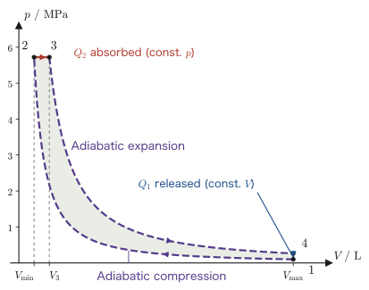

Chapter 28The Carnot Cycle and the Efficiency of Heat Engines
We want a “heat engine” (a device that converts heat into work), such as a steam engine or a gasoline engine, to extract as much work as possible from a given amount of fuel. Is there room, then, for the efficiency of converting heat into work to be raised without limit in theory, or is there some unavoidable upper limit? This question was answered rigorously by the idealized cyclic process of a heat engine that the French engineer Sadi Carnot conceived in 1824—the Carnot cycle.
In high school physics you will have learned that the thermal efficiency of a heat engine is defined as “the fraction of the absorbed heat that becomes work done on the surroundings.” In this book the work done by the engine on the surroundings is written $W'$, so with $Q_2$ denoting the absorbed heat we have $\eta=W'/Q_2$. In this chapter we take the Carnot cycle, the simplest cycle, which combines only isothermal and adiabatic processes, and confirm that its efficiency takes the surprisingly simple form $\eta=1-T_1/T_2$ ($T_1,T_2$ are the absolute temperatures of the cold and hot reservoirs, respectively), by an explicit calculation with an ideal gas as the working substance, without skipping a single line. We then prove from the second law of thermodynamics “why this efficiency is independent of the kind of working substance and, moreover, cannot be exceeded by any other heat engine” (Carnot's theorem). For the second law of thermodynamics itself, too, we present its two standard formulations, the Kelvin–Planck statement and the Clausius statement, and prove that the two are logically equivalent. Finally, we study the Otto cycle and the Diesel cycle, which are close to the cycles of actual automobile engines, and the refrigerator and the heat pump, which are what the Carnot cycle becomes when it is run in reverse.
- The two standard statements of the second law of thermodynamics (the Kelvin–Planck statement and the Clausius statement), and the proof that they are logically equivalent
- The four quasi-static processes that make up the Carnot cycle (isothermal expansion, adiabatic expansion, isothermal compression, adiabatic compression), and the definition of the thermal efficiency $\eta=W'/Q_2=1-Q_1/Q_2$
- The “reversed Carnot cycle,” which is possible precisely because the processes are reversible, and the proof of Carnot's theorem (the efficiency of a reversible engine is maximal and does not depend on the working substance)
- For a Carnot cycle with an ideal gas as the working substance, the calculation that derives $V_B/V_A=V_C/V_D$, $W'=nR(T_2-T_1)\ln(V_B/V_A)$, and $\eta=1-T_1/T_2$ completely, using Poisson's formula
- The derivation of the thermal efficiencies of the Otto cycle and the Diesel cycle, and the coefficients of performance (COP) of refrigerators and heat pumps
Source notes: Yasuhide Mochizuki, Physics Notes: Thermodynamics, pp. 41–44.
28.1 Two Statements of the Second Law of Thermodynamics and Their Equivalence
In Law 23.3 of Chapter 23, we introduced the second law of thermodynamics in two forms, the “Clausius statement” and the “Kelvin–Planck statement,” and deferred to this section the proof that the two say the same thing. We therefore first organize the terms used in the proof (heat reservoir, heat engine, refrigerator), then restate the two statements, and prove that they are equivalent.
28.1.1 Heat reservoirs and heat engines
A heat reservoir is a body so large that its temperature can be regarded as unchanged when heat is added to or removed from it (it is the same idea as the constant-temperature bath that appeared in Section 23.8; think of the sea, the atmosphere, or the boiler of a thermal power plant). The one at the higher temperature is called the hot reservoir (temperature $T_2$), and the one at the lower temperature is called the cold reservoir (temperature $T_1$, $T_1\lt T_2$).
A heat engine is a device that makes a working substance (such as the gas in a cylinder) repeat a cycle (a process that goes through a succession of changes and finally returns to its original state), and during this repetition absorbs heat $Q_2$ from the hot reservoir, delivers a part of it to the surroundings as work $W'$ done by the engine, and discards the remaining heat $Q_1$ to the cold reservoir (Figure 28.1). Conversely, a device that has work $W_{\mathrm{in}}$ done on it from outside, absorbs heat $Q_1$ from the cold reservoir, and releases heat $Q_2=Q_1+W_{\mathrm{in}}$ to the hot reservoir is called a refrigerator (studied in detail in Section 28.8).
Incidentally, a process that can be returned to its original state by reversing the direction of all the heat flows is called a reversible process (studied in detail in Section 28.3). The heat engines and refrigerators used in the proofs of this section may be ordinary ones (they need not be reversible).
28.1.2 The two statements
The second law of thermodynamics has two standard formulations, different in appearance, that were proposed in the middle of the nineteenth century. One is the following statement due to William Thomson (later Lord Kelvin); the other is the statement due to Rudolf Clausius.
Law 28.1: Kelvin–Planck statement
There is no process that leaves no change other than absorbing heat from a single heat reservoir and converting all of it into work delivered to the surroundings (a device that goes once around a cycle and returns to its original state).
The key point is the phrase “a single heat reservoir.” For example, in the isothermal expansion of an ideal gas (Section 27.1), all the heat absorbed from the reservoir can be converted into work ($Q=W'$, since $\Delta U=0$). In that case, however, the device does not “go once around a cycle and return to its original state”—the volume of the gas remains changed from $V_1$ to $V_2$, and to repeat the same operation, work must be done on the gas from outside to push it back to $V_1$. What the Kelvin–Planck statement forbids is strictly a “device that, while repeating a cycle, absorbs heat from only one reservoir and keeps converting it into work forever.” A device that creates energy out of nothing is called a perpetual motion machine of the first kind, and it violates the first law. In contrast, a device like the one above, which does not violate the first law but does violate the second law, is called a perpetual motion machine of the second kind.
Law 28.2: Clausius statement
There is no process that leaves no change other than heat passing from a cold body to a hot body.
In the Clausius statement, too, the qualification “by itself (leaving no other change)” is essential. Refrigerators and air conditioners are precisely devices that move heat from the low-temperature side to the high-temperature side, but to do so they must be continually supplied with electrical energy (work) from outside—they leave another change, the “supply of work,” and therefore do not violate the Clausius statement (studied in detail in Section 28.8).
28.1.3 Proof of the equivalence
In the proof, when several devices are combined, we keep track of how much heat flows in and out of each reservoir by adding up the contributions (Figure 28.3).
Proof: The Kelvin–Planck statement and the Clausius statement are equivalent
We show, by contradiction and in both directions, that the two statements are logically equivalent; that is, “if one of them fails, then so does the other.” In both arguments we use only two heat reservoirs: a hot reservoir (temperature $T_2$) and a cold reservoir (temperature $T_1$, $T_1\lt T_2$).
(a) If the Kelvin–Planck statement fails, then the Clausius statement fails as well. Suppose that there exists a device $\mathrm K$ that violates the Kelvin–Planck statement (it absorbs heat $Q$ from a single hot reservoir $T_2$ and converts all of it into work $W'=Q$, leaving no other change). We use this work $W'$ to drive a separate refrigerator $\mathrm R$ (Figure 28.3 (a)). When the refrigerator $\mathrm R$ receives work $W_{\mathrm{in}}$ from outside, it absorbs heat $Q_1$ from the cold reservoir $T_1$ and releases heat $Q_1+W_{\mathrm{in}}$ to the hot reservoir $T_2$ (this is a consequence of the law of energy conservation, $\Delta U=0$ over one cycle). We choose the operating scale of $\mathrm R$ so that $\mathrm R$ receives exactly the work delivered by $\mathrm K$ ($W_{\mathrm{in}}=W'$).
We tally the balance of the combined device consisting of $\mathrm K$ and $\mathrm R$, reservoir by reservoir. The hot reservoir loses heat $Q$ to $\mathrm K$ and receives heat $Q_1+W'$ from $\mathrm R$, so, using $W'=Q$, it receives a net heat of $-Q+(Q_1+W')=Q_1$. The cold reservoir loses heat $Q_1$ to $\mathrm R$. As for work, $\mathrm R$ uses exactly the work $W'$ delivered by $\mathrm K$, so the net exchange with the surroundings is $0$. In summary, the combined device as a whole has taken heat $Q_1$ from the cold reservoir $T_1$ and given heat $Q_1$ to the hot reservoir $T_2$, while the net exchange of work remains $0$. This is precisely the process forbidden by the Clausius statement (heat moving from cold to hot without a supply of work), so the Clausius statement has failed.
(b) If the Clausius statement fails, then the Kelvin–Planck statement fails as well. Suppose that there exists a device $\mathrm C$ that violates the Clausius statement (it spontaneously transfers heat $Q$ from the cold reservoir $T_1$ to the hot reservoir $T_2$ without a supply of work). In combination with it, we operate an ordinary heat engine $\mathrm R'$ so that it absorbs heat $Q_2'$ from the hot reservoir $T_2$, does work $W'$, and releases heat $Q_1'=Q_2'-W'$ to the cold reservoir $T_1$ (Figure 28.3 (b)). Since the operating scale of $\mathrm R'$ (the amounts per cycle) can be chosen freely, we choose it so that the heat released to the cold reservoir is exactly $Q_1'=Q$ (the same amount as the heat that $\mathrm C$ takes from the cold reservoir).
We tally the balance of the combined device, reservoir by reservoir. The cold reservoir loses heat $Q$ to $\mathrm C$ and receives heat $Q_1'=Q$ from $\mathrm R'$, so its net change is $0$—the cold reservoir ends up unchanged. The hot reservoir receives heat $Q$ from $\mathrm C$ and loses heat $Q_2'$ to $\mathrm R'$, so it loses a net amount of heat
$$ Q_2'-Q=Q_2'-Q_1'=W' $$In other words, seen from the device as a whole, heat $W'$ has been absorbed from the hot reservoir. In summary, the combined device as a whole has left no change in the cold reservoir, absorbed heat $W'$ from the hot reservoir alone, and converted all of it into work $W'$. This is precisely the process forbidden by the Kelvin–Planck statement (converting all of the heat absorbed from a single reservoir into work), so the Kelvin–Planck statement has failed.
Parts (a) and (b) show, respectively, “the Kelvin–Planck statement fails $\Rightarrow$ the Clausius statement fails” and “the Clausius statement fails $\Rightarrow$ the Kelvin–Planck statement fails.” Taking their contrapositives gives “the Clausius statement holds $\Rightarrow$ the Kelvin–Planck statement holds” and “the Kelvin–Planck statement holds $\Rightarrow$ the Clausius statement holds.” Together, these show that each of the two statements implies the other—that is, that the two are logically equivalent.
∎
Theorem 28.1: Equivalence of the two statements of the second law of thermodynamics
The Kelvin–Planck statement (Law 28.1) and the Clausius statement (Law 28.2) are logically equivalent. That is, if either one is assumed, the other can be proved, and whichever of them is adopted as the starting point of the second law of thermodynamics, the conclusions derived (the same consequences) do not change.
Intuition: Why do we need two ways of stating the “same content”?
The Kelvin–Planck statement is phrased in terms of the “heat engine” (a device that extracts work from a heat reservoir), whereas the Clausius statement is phrased in terms of the “refrigerator” (a device that carries heat from cold to hot). At first sight, each seems to come from a separate everyday experience (“frictional heat cannot be turned back into work” and “a refrigerator does not run unless it uses electricity”), but as we saw in the proof, if there were a device that violated one of them, we could use it as a component to build a device that violates the other. In other words, the two statements describe, from different angles, a single deep restriction: nature allows no convenient loophole in either of them. Carnot's theorem, which we prove in Section 28.4, is a consequence that follows directly from this restriction.
Example 28.1: Examining a rumor of a perpetual motion machine
An inventor claims, “I have invented a device that absorbs heat from seawater (which can be regarded as a huge heat reservoir at constant temperature) and converts all of it into power for a ship's engine. It needs no fuel at all and leaves no change other than a slight drop in the temperature of the seawater.” Determine whether this claim is feasible in light of the second law of thermodynamics.
Solution. This device absorbs heat from a single heat reservoir, the seawater, converts all of it into work (power), and leaves no other change (there is no process in which heat is discarded to the other, cold reservoir). This is precisely the process forbidden by Law 28.1 (the Kelvin–Planck statement), so it violates the second law of thermodynamics. Therefore, the device cannot be realized. (Such an imaginary device, which apparently does not violate the law of energy conservation (the first law) but does violate the second law, is called a perpetual motion machine of the second kind.) Extracting heat from seawater and converting it into work is possible in principle, but to do so we always need one more reservoir at a lower temperature (a place even colder than the seawater), and part of the heat must be discarded into it—this is the structure of the Carnot cycle that we study from Section 28.2 onward.
28.2 The Four Processes of the Carnot Cycle
The Carnot cycle (also called the Carnot engine) is the simplest and most idealized of the cyclic processes (cycles) of a heat engine. It is built by combining only the two kinds of quasi-static changes learned in Chapter 27, “isothermal processes” and “adiabatic processes.” It is a cycle in which the working substance (the substance that is actually expanded and compressed, such as a gas enclosed in a cylinder) is taken through the states $A\to B\to C\to D\to A$ in this order and returned to the original state $A$, and it consists of the following four processes (Figure 28.4).
- $A\to B$: isothermal expansion
- $B\to C$: adiabatic expansion
- $C\to D$: isothermal compression
- $D\to A$: adiabatic compression
That is, an isothermal process ($A\to B$, $C\to D$) and an adiabatic process ($B\to C$, $D\to A$) appear alternately, once each. Below we look at the four processes in turn (drawn with a cylinder and a piston, they look like Figure 28.5).
Caution: Do not confuse isothermal and adiabatic processes
$A\to B$ and $C\to D$ are isothermal processes: the working substance is kept in contact with a heat reservoir, and heat is taken in and given off while the temperature is held constant. $B\to C$ and $D\to A$ are adiabatic processes: the working substance is separated from the reservoirs, and the exchange of heat is made $0$ (the temperature changes). On a $p\text{-}V$ diagram, the adiabat leaving a given point is steeper than the isotherm through that point (the curve $pV^\gamma=$ constant of an adiabatic process drops in pressure more steeply as the volume increases than the curve $pV=$ constant of an isothermal process does).
28.2.1 [1] Isothermal expansion $A\to B$
The working substance is brought into contact with a high-temperature heat reservoir (the hot reservoir) at temperature $T_2$ and made to expand isothermally. Because it is expanded quasi-statically (sufficiently slowly) while kept in contact, the temperature of the working substance is always held at the reservoir temperature $T_2$. During this process the working substance absorbs a quantity of heat $Q_2$ from the hot reservoir.
28.2.2 [2] Quasi-static adiabatic expansion $B\to C$
The working substance is separated from the hot reservoir and made to expand adiabatically (with no exchange of heat), which lowers its pressure. Even in an adiabatic process, a gas loses energy (internal energy) as it expands, so its temperature also falls. In this process the temperature of the working substance falls from the temperature $T_2$ of the hot reservoir to the temperature $T_1$ of the cold reservoir with which it will next be brought into contact.
28.2.3 [3] Isothermal compression $C\to D$
The working substance is brought into contact with a low-temperature heat reservoir (the cold reservoir) at temperature $T_1$ ($T_1\lt T_2$) and compressed isothermally at low pressure. During this process the working substance releases a quantity of heat $Q_1$ to the cold reservoir.
28.2.4 [4] Quasi-static adiabatic compression $D\to A$
The working substance is separated from the cold reservoir and compressed adiabatically, returning it to the initial state $A$. In adiabatic compression the gas receives energy, so its temperature rises; when it has returned exactly to the temperature $T_2$ of $A$, one full turn of the cycle is complete.
Let us apply the first law of thermodynamics $\Delta U=Q-W'$ (Section 23.4) to this one full cycle. The net heat received by the working substance in one cycle is $Q=Q_2-Q_1$: the heat $Q_2$ absorbed from the hot reservoir minus the heat $Q_1$ released to the cold reservoir. On the other hand, the substance starts from $A$, goes once around, and returns exactly to $A$; since the internal energy is a state quantity (a quantity determined by the state alone), its change vanishes:
$$ \Delta U=0 $$(Subtracting the internal energy of $A$ from the internal energy of $A$ naturally gives $0$—this is the essence of a cycle, “going once around and returning to the start.”) Substituting these into the first law, we obtain
\begin{equation} \Delta U=Q-W'=(Q_2-Q_1)-W'=0 \label{eq:28-cycle-energy} \end{equation}Therefore, the work $W'$ that the working substance does on the surroundings over this whole cycle (the net output per cycle) is
\begin{equation} W'=Q_2-Q_1 \label{eq:28-cycle-work} \end{equation}Part of the heat absorbed from the hot reservoir (namely $Q_1$) is “discarded” to the cold reservoir, and only the remaining difference ($Q_2-Q_1$) is extracted as work—this is the basic structure of the Carnot cycle and, in general, of any heat engine (Figure 28.6).
Example 28.2: Work per cycle
In one cycle, a certain Carnot cycle absorbs heat $Q_2=840\ \mathrm{J}$ from the hot reservoir and releases heat $Q_1=520\ \mathrm{J}$ to the cold reservoir. Find the work $W'$ that this cycle does on the surroundings in one full cycle.
Solution. From Eq. \eqref{eq:28-cycle-work},
$$ W'=Q_2-Q_1=840-520=320\ \mathrm{J} $$This is the work done on the surroundings in one cycle.
28.3 Thermal Efficiency and the Reversed Carnot Cycle
It is natural to measure the performance of a heat engine by a ratio: “of the heat absorbed from the hot reservoir, what fraction could be extracted as work?” We call this ratio the thermal efficiency.
Definition 28.1: Thermal efficiency
Let the thermal efficiency $\eta$ (eta, a Greek letter) of a heat engine be
\begin{equation} \eta\equiv\frac{(\text{work done by the system on its surroundings})}{(\text{heat absorbed})}=\frac{W'}{Q_2} \label{eq:28-eta-def} \end{equation}by definition.
As we saw in Section 28.2, applying the first law of thermodynamics to one full turn of the Carnot cycle gives $\Delta U=Q-W'=(Q_2-Q_1)-W'=0$ (Eq. \eqref{eq:28-cycle-energy}; $\Delta U=0$ because the system returns to $A$), and $W'=Q_2-Q_1$ (Eq. \eqref{eq:28-cycle-work}). Substituting this into Eq. \eqref{eq:28-eta-def} of Definition 28.1, we obtain
$$ \eta=\frac{W'}{Q_2}=\frac{Q_2-Q_1}{Q_2} $$That is, we obtain
\begin{equation} \eta=1-\frac{Q_1}{Q_2} \label{eq:28-eta-q} \end{equation}If we could avoid discarding any heat at all to the cold reservoir (that is, if we could make $Q_1=0$), we would have $\eta=1$ (100% efficiency). However, the Kelvin–Planck statement of Section 28.1 forbids exactly this $Q_1=0$ (converting all the heat absorbed from a single reservoir into work). Therefore every heat engine, not only the Carnot cycle, must have $Q_1\gt0$, and so $\eta\lt1$ is unavoidable.
28.3.1 The reversed Carnot cycle
The four processes that make up the Carnot cycle (isothermal expansion, adiabatic expansion, isothermal compression, and adiabatic compression) were all defined under the condition that they are carried out “sufficiently slowly, quasi-statically.” Furthermore, we assume that there is no dissipation of energy by friction and the like, and that heat is exchanged when the working substance is at the same temperature as the reservoir (that is, with the temperature difference infinitesimally small). A process that is quasi-static, free of dissipation such as friction, and in which heat is exchanged with no temperature difference from the reservoir is a reversible process (a process that can be retraced in the opposite direction without leaving any trace in the surroundings). (Being quasi-static is a necessary condition for reversibility, but it is not sufficient; see also the reversible expansion in Section 27.1.) All four processes of the Carnot cycle satisfy this condition, so the cycle as a whole is also reversible, and it can be traced along exactly the same path in the opposite direction ($A\to D\to C\to B\to A$) (Figure 28.7).
Intuition: What is swapped when the cycle runs in reverse
In the reversed Carnot cycle, every flow of heat and work reverses its direction. In the forward cycle, the system absorbed $Q_2$ from the hot reservoir, released $Q_1$ to the cold reservoir, and did work $W'=Q_2-Q_1$ on the surroundings. In the reversed cycle, it absorbs the same amount $Q_1$ from the cold reservoir, releases the same amount $Q_2$ to the hot reservoir, and has work $W'$ (the same in magnitude, opposite in direction) done on it from outside. This is exactly the action of pumping heat up from the low-temperature side to the high-temperature side; since it is accompanied by a supply of work, it does not violate the Clausius statement of Section 28.1. This “reversed Carnot cycle” serves as the theoretically most efficient model for refrigerators, air conditioners, and heat pumps (we compute the coefficient of performance in Section 28.8).
Example 28.3: Finding the ratio of heats from the thermal efficiency
A Carnot cycle has thermal efficiency $\eta=0.35$. When this cycle absorbs $Q_2=2.0\times10^{3}\ \mathrm{J}$ from the hot reservoir, find the heat $Q_1$ it releases to the cold reservoir and the work $W'$ it does on its surroundings.
Solution. Solving Eq. \eqref{eq:28-eta-q}, $\eta=1-Q_1/Q_2$, for $Q_1$ gives $Q_1=(1-\eta)Q_2$. Substituting the numbers,
$$ Q_1=(1-0.35)\times2.0\times10^{3}=0.65\times2.0\times10^{3}=1.3\times10^{3}\ \mathrm{J} $$The work follows from Definition 28.1 ($\eta=W'/Q_2$) as $W'=\eta Q_2$, or alternatively from Eq. \eqref{eq:28-cycle-work} ($W'=Q_2-Q_1$):
$$ W'=\eta Q_2=0.35\times2.0\times10^{3}=7.0\times10^{2}\ \mathrm{J} $$(As a check, $Q_2-Q_1=2.0\times10^{3}-1.3\times10^{3}=7.0\times10^{2}\ \mathrm{J}$, which agrees.)
28.4 Carnot's Theorem — The Efficiency of a Reversible Engine Is Maximal and Independent of the Working Substance
In Section 28.5, we restrict the working substance to an ideal gas and calculate that the thermal efficiency of the Carnot cycle takes the concrete form $\eta=1-T_1/T_2$ ($T_1,T_2$ are the absolute temperatures of the cold reservoir and the hot reservoir). Two questions arise naturally here. (1) If we change the working substance to something other than an ideal gas (a real gas, a liquid, or a solid—anything will do), will the efficiency of a reversible heat engine working between the same two reservoirs $T_1,T_2$ still take the same value? (2) More fundamentally, is it impossible to build a heat engine more efficient than a reversible engine (irreversible engines included)? The following theorem, which Carnot himself established, answers these two questions at the same time. The apparatus that we combine in the proof is shown in Figure 28.8.
Proof: Carnot's theorem
Consider an arbitrary heat engine $\mathrm X$ (reversible or irreversible) working between the same hot reservoir $T_2$ and cold reservoir $T_1$ ($T_1\lt T_2$), and a reversible heat engine $\mathrm R$ working between the same two reservoirs (for example, a Carnot cycle; the thermal efficiency $\eta_{\mathrm R}=1-T_1/T_2\gt0$ of the Carnot cycle of an ideal gas will be calculated explicitly in Section 28.5). Both are taken to be heat engines that do positive work on the surroundings. Let $\eta_{\mathrm X}$ be the thermal efficiency of $\mathrm X$ and $\eta_{\mathrm R}$ that of $\mathrm R$.
First, we assume $\eta_{\mathrm X}\gt\eta_{\mathrm R}$ and derive a contradiction (proof by contradiction). Run $\mathrm X$ for one cycle: it absorbs $Q_{2\mathrm X}$ from the hot reservoir, delivers work $W'$ ($=\eta_{\mathrm X}Q_{2\mathrm X}$) to the surroundings, and releases $Q_{1\mathrm X}=Q_{2\mathrm X}-W'$ to the cold reservoir. We use this work $W'$, in its entirety, to run $\mathrm R$ in reverse (Section 28.3). Since $\mathrm R$ is reversible, when it is run in reverse, the input of work $W'$ makes it absorb $Q_{1\mathrm R}$ from the cold reservoir and release $Q_{2\mathrm R}=Q_{1\mathrm R}+W'$ to the hot reservoir (the relation $\eta_{\mathrm R}=W'/Q_{2\mathrm R}$, which defines the thermal efficiency when $\mathrm R$ is run forward, continues to hold in reverse operation as a correspondence between the magnitudes of heat and work—reversible means that the engine merely retraces the same path backward, so the magnitudes of the heat and work exchanged do not change and only their directions are reversed). Since the operating scale of $\mathrm R$ can be chosen freely, we choose it so that the work that $\mathrm R$ receives in one cycle coincides exactly with the output $W'$ of $\mathrm X$.
For the combined apparatus consisting of $\mathrm X$ (running forward) and $\mathrm R$ (running in reverse), the net work exchanged with the surroundings is $0$, since $\mathrm R$ consumes exactly the $W'$ that $\mathrm X$ delivers. As for the heat balance of the hot reservoir, $\mathrm X$ absorbs $Q_{2\mathrm X}$ from it and $\mathrm R$ releases $Q_{2\mathrm R}$ to it, so the net heat received by the hot reservoir is
$$ Q_{2\mathrm R}-Q_{2\mathrm X} $$As for the heat balance of the cold reservoir, $\mathrm X$ releases $Q_{1\mathrm X}$ to it and $\mathrm R$ absorbs $Q_{1\mathrm R}$ from it, so the cold reservoir loses a net heat of $Q_{1\mathrm R}-Q_{1\mathrm X}$. Since the net exchange of work is $0$ (no exchange of energy with the surroundings), for the combined apparatus as a whole to satisfy the law of conservation of energy (the first law), the heat received by the hot reservoir and the heat lost by the cold reservoir must be equal: $Q_{2\mathrm R}-Q_{2\mathrm X}=Q_{1\mathrm R}-Q_{1\mathrm X}$ (this can also be checked directly from the first law for each engine itself, $Q_{2\mathrm X}-Q_{1\mathrm X}=W'=Q_{2\mathrm R}-Q_{1\mathrm R}$).
Now, from the assumption $\eta_{\mathrm X}\gt\eta_{\mathrm R}$ and the fact that $\mathrm X,\mathrm R$ deliver (or receive) the same work $W'$, we have $W'=\eta_{\mathrm X}Q_{2\mathrm X}=\eta_{\mathrm R}Q_{2\mathrm R}$, so that
$$ Q_{2\mathrm X}=\frac{W'}{\eta_{\mathrm X}},\qquad Q_{2\mathrm R}=\frac{W'}{\eta_{\mathrm R}} $$Since $\eta_{\mathrm X}\gt\eta_{\mathrm R}\gt0$ gives $1/\eta_{\mathrm X}\lt1/\eta_{\mathrm R}$, it follows that
$$ Q_{2\mathrm X}\lt Q_{2\mathrm R}\qquad\therefore\ Q_{2\mathrm R}-Q_{2\mathrm X}\gt0 $$In other words, the combined apparatus as a whole, with the net exchange of work with the surroundings remaining $0$, takes the heat $Q_{2\mathrm R}-Q_{2\mathrm X}\,(\gt0)$ from the cold reservoir and gives the same amount of heat to the hot reservoir—this is precisely the process that the Clausius statement of Section 28.1 forbids, and so it is a contradiction. Therefore the assumption $\eta_{\mathrm X}\gt\eta_{\mathrm R}$ is false, and the inequality
\begin{equation} \eta_{\mathrm X}\le\eta_{\mathrm R} \label{eq:28-carnot-bound} \end{equation}holds for any heat engine $\mathrm X$.
Furthermore, suppose that $\mathrm X$ itself is also a reversible engine. In this case, exactly the same argument can be carried out with the roles of $\mathrm X$ and $\mathrm R$ interchanged (using the fact that $\mathrm X$ is reversible, this time we run $\mathrm X$ in reverse and $\mathrm R$ forward). By the same procedure, we can show that $\eta_{\mathrm R}\le\eta_{\mathrm X}$ also holds. Combined with Eq. \eqref{eq:28-carnot-bound}, if $\mathrm X,\mathrm R$ are both reversible engines, it must be that
$$ \eta_{\mathrm X}=\eta_{\mathrm R} $$That is, all reversible heat engines working between the same two reservoirs have exactly the same thermal efficiency, regardless of the kind of working substance (gas or liquid, ideal gas or not).
∎
Theorem 28.2: Carnot's theorem
For heat engines working between the same hot reservoir $T_2$ and cold reservoir $T_1$ ($T_1\lt T_2$), the following hold.
(i) The thermal efficiency $\eta_{\mathrm X}$ of any heat engine working between the same two reservoirs never exceeds the thermal efficiency $\eta_{\mathrm R}$ of a reversible heat engine: $\eta_{\mathrm X}\le\eta_{\mathrm R}$.
(ii) The thermal efficiencies of all reversible heat engines working between the same two reservoirs are equal, regardless of the kind of working substance.
Intuition: What Carnot's theorem guarantees
Carnot's theorem guarantees a powerful and somewhat surprising conclusion: “once the reservoir temperatures $T_1,T_2$ are fixed, the theoretical maximum efficiency is uniquely determined, regardless of the working substance or any ingenuity in the design of the engine.” However cleverly an engineer designs an engine, it can never exceed the efficiency of a reversible engine (the ideal limit, in which there are no losses at all from friction or abrupt changes). Conversely, if we can calculate the efficiency of a reversible engine, then for any working substance whatsoever—whether an ideal gas or steam—it gives the theoretical upper limit of the efficiency attainable between the two reservoirs. In Section 28.5, we choose an ideal gas, for which the calculation is simplest, as the working substance and determine this universal efficiency explicitly in the form $1-T_1/T_2$.
Discussion: Carnot's theorem and how temperature is defined (thermodynamic temperature)
By Theorem 28.2 (ii), the efficiency of a reversible engine working between two reservoirs is determined by the two reservoirs alone, independent of the working substance. This means that by measuring the efficiency $\eta=1-Q_1/Q_2$ of a reversible engine, we can determine the ratio of the temperatures of the two reservoirs, $T_1/T_2=Q_1/Q_2=1-\eta$, without relying on the properties of any substance. This is the thermodynamic temperature that Kelvin conceived. In Section 28.5, we use the temperature $T$ defined through the equation of state of an ideal gas and calculate that the efficiency of the Carnot cycle of an ideal gas is $\eta=1-T_1/T_2$. This result shows that the temperature of an ideal gas coincides (apart from a constant of proportionality) with the thermodynamic temperature, which is independent of the working substance.
Example 28.4: An inventor's claim and Carnot's theorem
An inventor has developed a new heat engine that works between a hot reservoir at a temperature of $500\ \mathrm{K}$ and a cold reservoir at a temperature of $300\ \mathrm{K}$, and has announced, “We have achieved a thermal efficiency of $55\,\%$.” Determine whether this claim is physically possible (you may use in advance the result $\eta_{\mathrm{Carnot}}=1-T_1/T_2$ of Section 28.5).
Solution. The thermal efficiency of a reversible heat engine (a Carnot cycle) working between the same two reservoirs ($T_2=500\ \mathrm{K}$, $T_1=300\ \mathrm{K}$) is, as will be shown in Section 28.5,
$$ \eta_{\mathrm{Carnot}}=1-\frac{T_1}{T_2}=1-\frac{300}{500}=1-0.60=0.40=40\,\% $$By Theorem 28.2 (i), the efficiency of any heat engine working between the same two reservoirs cannot exceed this efficiency of $40\,\%$ of the reversible engine. The $55\,\%$ claimed by the inventor exceeds this theoretical upper limit of $40\,\%$, so we can conclude that the claim contradicts the second law of thermodynamics (Carnot's theorem) and is impossible to realize. (In this way, the Carnot efficiency is used as an absolute “yardstick” when evaluating the performance of real heat engines.)
28.5 The Carnot Cycle of an Ideal Gas — Derivation of the Thermal Efficiency $\eta=1-T_1/T_2$
By Carnot's theorem of Section 28.4, we learned that the efficiency of a reversible heat engine is determined uniquely, independent of the working substance. We therefore take the ideal gas, for which the calculation is simplest, as the working substance, actually run the Carnot cycle with it, and find its efficiency in explicit form.
Illustration 28.1: The Carnot cycle of an ideal gas
Consider the Carnot cycle $A\to B\to C\to D\to A$ of Section 28.2 (Figure 28.9) whose working substance is $n\ \mathrm{mol}$ of an ideal gas. $A\to B$ and $C\to D$ are isothermal processes at temperatures $T_2,\,T_1$ ($T_1\lt T_2$), respectively, and $B\to C$ and $D\to A$ are adiabatic processes. Show the following.
(i) $\dfrac{V_B}{V_A}=\dfrac{V_C}{V_D}$
(ii) The work that this cycle does on its surroundings is $W'=nR(T_2-T_1)\ln\dfrac{V_B}{V_A}$
(iii) The thermal efficiency is $\eta=1-\dfrac{T_1}{T_2}$
![The p-V diagram of the Carnot cycle of an ideal gas. From A (1.0 L, about 3.3 MPa, 400 K) the gas expands isothermally along the red isotherm to B (3.0 L, 400 K); from B it expands along the purple dashed adiabat to C (about 6.2 L, 300 K); from C it is compressed isothermally along the blue isotherm to D (about 2.1 L, 300 K); and from D it is compressed along the purple dashed adiabat back to A, going once around the loop clockwise. On the horizontal axis, the positions of V_A, V_D, V_B, and V_C are marked by vertical dotted lines, and they increase in the order V_A, V_D, V_B, V_C](figs/ch28_fig28-9.svg)
Solution (i): Proof that $V_B/V_A=V_C/V_D$
Since $B\to C$ and $D\to A$ are adiabatic processes of an ideal gas, Poisson's formula (Section 27.3) $TV^{\gamma-1}=(\text{const.})$ ($\gamma=C_p/C_V$ is the heat capacity ratio, Section 27.5) applies. Applying it to the initial and final points of $B\to C$ and to those of $D\to A$, respectively, we obtain
$$ T_2V_B^{\,\gamma-1}=T_1V_C^{\,\gamma-1}\qquad(B\to C),\qquad\qquad T_1V_D^{\,\gamma-1}=T_2V_A^{\,\gamma-1}\qquad(D\to A) $$Dividing both sides of the first equation by $T_1V_B^{\,\gamma-1}$ gives
$$ \frac{T_2}{T_1}=\left(\frac{V_C}{V_B}\right)^{\gamma-1} $$Dividing both sides of the second equation by $T_2V_D^{\,\gamma-1}$ gives
$$ \frac{T_1}{T_2}=\left(\frac{V_A}{V_D}\right)^{\gamma-1}\qquad\therefore\ \frac{T_2}{T_1}=\left(\frac{V_D}{V_A}\right)^{\gamma-1} $$(the equation on the right is obtained by taking the reciprocal of both sides of the equation on the left). The left-hand sides of the two equations are both equal to $T_2/T_1$, so the right-hand sides are also equal to each other:
$$ \left(\frac{V_C}{V_B}\right)^{\gamma-1}=\left(\frac{V_D}{V_A}\right)^{\gamma-1} $$Since $\gamma\gt1$ (by Section 27.5, Mayer's relation gives $C_p\gt C_V$, and therefore $\gamma=C_p/C_V\gt1$), the exponent satisfies $\gamma-1\gt0$, and $x\mapsto x^{\gamma-1}$ ($x\gt0$) is a monotonically increasing function, so the bases ($V_C/V_B$ and $V_D/V_A$) must be equal:
$$ \frac{V_C}{V_B}=\frac{V_D}{V_A} $$Multiplying both sides by $V_B/V_D$ and rearranging shows that
\begin{equation} \frac{V_B}{V_A}=\frac{V_C}{V_D} \label{eq:28-idealgas-ratio} \end{equation}holds.
∎
Solution (ii): Proof that $W'=nR(T_2-T_1)\ln(V_B/V_A)$
We find the work $W'_{AB},W'_{BC},W'_{CD},W'_{DA}$ done by the working substance on its surroundings in each of the four processes, and add them up.
[1] $A\to B$ (isothermal expansion, temperature $T_2$) Using the formula for the work in a reversible isothermal process of an ideal gas (Section 27.1), we have
$$ W'_{AB}=\int_{V_A}^{V_B}p\,\dd V=\int_{V_A}^{V_B}\frac{nRT_2}{V}\,\dd V=nRT_2\bigl[\ln V\bigr]_{V_A}^{V_B}=nRT_2\ln\frac{V_B}{V_A} $$[2] $B\to C$ (adiabatic expansion) Since the process is adiabatic, $Q_{BC}=0$. Substituting this into the first law of thermodynamics $\Delta U_{BC}=Q_{BC}-W'_{BC}$ gives $\Delta U_{BC}=-W'_{BC}$, that is, $W'_{BC}=-\Delta U_{BC}$. The change in internal energy can be written, using the heat capacity at constant volume $C_V$ (the heat capacity of $n$ mol, Section 27.2), as $\Delta U_{BC}=C_V(T_C-T_B)=C_V(T_1-T_2)$ (the temperature at $B$ is $T_2$ and that at $C$ is $T_1$), so
$$ W'_{BC}=-C_V(T_1-T_2)=C_V(T_2-T_1) $$[3] $C\to D$ (isothermal compression, temperature $T_1$) As in [1],
$$ W'_{CD}=\int_{V_C}^{V_D}p\,\dd V=\int_{V_C}^{V_D}\frac{nRT_1}{V}\,\dd V=nRT_1\ln\frac{V_D}{V_C} $$(Since this is a compression, $V_D\lt V_C$, so $\ln(V_D/V_C)\lt0$ and $W'_{CD}\lt0$—the gas does negative work on its surroundings, that is, work is done on the gas by its surroundings. The sign is correct.)
[4] $D\to A$ (adiabatic compression) As in [2], from $Q_{DA}=0$ we have $W'_{DA}=-\Delta U_{DA}=-C_V(T_A-T_D)=-C_V(T_2-T_1)$ (the temperature at $D$ is $T_1$ and that at $A$ is $T_2$).
Adding the four results gives
$$ W'=W'_{AB}+W'_{BC}+W'_{CD}+W'_{DA} =nRT_2\ln\frac{V_B}{V_A}+\underbrace{C_V(T_2-T_1)}_{[2]}+nRT_1\ln\frac{V_D}{V_C}\underbrace{-C_V(T_2-T_1)}_{[4]} $$The terms $C_V(T_2-T_1)$ in [2] and [4] have opposite signs and cancel completely (the crux of the calculation is that the changes in internal energy in the two adiabatic processes exactly offset each other). What remains is
$$ W'=nRT_2\ln\frac{V_B}{V_A}+nRT_1\ln\frac{V_D}{V_C} $$Now we substitute Eq. \eqref{eq:28-idealgas-ratio} of Solution (i) ($V_B/V_A=V_C/V_D$, so, taking reciprocals, $V_D/V_C=V_A/V_B$):
$$ W'=nRT_2\ln\frac{V_B}{V_A}+nRT_1\ln\frac{V_A}{V_B} =nRT_2\ln\frac{V_B}{V_A}-nRT_1\ln\frac{V_B}{V_A} $$(here $\ln(V_A/V_B)=\ln\bigl((V_B/V_A)^{-1}\bigr)=-\ln(V_B/V_A)$, a property of the logarithm, High School Mathematics, Section 6.2). Factoring out $\ln(V_B/V_A)$ gives
\begin{equation} W'=nR(T_2-T_1)\ln\frac{V_B}{V_A} \label{eq:28-idealgas-work} \end{equation}as was to be shown.
∎
Solution (iii): Proof that $\eta=1-T_1/T_2$
By Definition 28.1 (Eq. \eqref{eq:28-eta-q}), $\eta=1-Q_1/Q_2$, so it suffices to show that $\dfrac{Q_1}{Q_2}=\dfrac{T_1}{T_2}$.
Since $A\to B$ is an isothermal process, $\Delta U_{AB}=0$. Substituting $W'_{AB}=nRT_2\ln(V_B/V_A)$, found in Solution (ii), into the first law of thermodynamics $\Delta U_{AB}=Q_2-W'_{AB}=0$ ($Q_2$ is the heat absorbed in $A\to B$) gives
\begin{equation} Q_2=W'_{AB}=nRT_2\ln\frac{V_B}{V_A} \label{eq:28-Q2} \end{equation}Also, $C\to D$ is an isothermal process in which the working substance releases heat $Q_1$ to the cold reservoir, so the heat received by the working substance can be written $-Q_1$ (where $Q_1\gt0$ is the magnitude of the heat released). Hence $\Delta U_{CD}=-Q_1-W'_{CD}=0$, and using $W'_{CD}=nRT_1\ln(V_D/V_C)$ from Solution (ii), we obtain
$$ Q_1=-W'_{CD}=-nRT_1\ln\frac{V_D}{V_C}=nRT_1\ln\frac{V_C}{V_D} $$Substituting Eq. \eqref{eq:28-idealgas-ratio} of Solution (i) ($V_C/V_D=V_B/V_A$) here gives
\begin{equation} Q_1=nRT_1\ln\frac{V_B}{V_A} \label{eq:28-Q1} \end{equation}Comparing Eq. \eqref{eq:28-Q2} and Eq. \eqref{eq:28-Q1}, we see that both contain the same factor $nR\ln(V_B/V_A)$, which can be canceled:
$$ \frac{Q_1}{Q_2}=\frac{nRT_1\ln\dfrac{V_B}{V_A}}{nRT_2\ln\dfrac{V_B}{V_A}}=\frac{T_1}{T_2} $$Substituting this into Definition 28.1 gives
\begin{equation} \eta=1-\frac{Q_1}{Q_2}=1-\frac{T_1}{T_2} \label{eq:28-eta-carnot} \end{equation}as was to be shown.
∎
Discussion: The discovery that $Q_2/T_2-Q_1/T_1=0$ — a foreshadowing of entropy
Let us compare Eqs. \eqref{eq:28-Q2} and \eqref{eq:28-Q1}, obtained in Solution (iii). In general, the quantity of heat $Q$ is a quantity whose value changes with the path, and it is not a state quantity (a quantity determined only by the initial and final states, regardless of how the change is carried out)—indeed, over one cycle $Q_2-Q_1\neq0$ (by Eq. \eqref{eq:28-cycle-work}; it is precisely because this is nonzero that the work $W'$ can be extracted). Yet if we compare the quantities obtained by dividing Eq. \eqref{eq:28-Q2} by $T_2$ and Eq. \eqref{eq:28-Q1} by $T_1$,
$$ \frac{Q_2}{T_2}=nR\ln\frac{V_B}{V_A},\qquad\frac{Q_1}{T_1}=nR\ln\frac{V_B}{V_A} $$we find that the two are exactly equal: $\dfrac{Q_2}{T_2}-\dfrac{Q_1}{T_1}=0$. Although $Q$ itself is not a state quantity, the combination $Q/T$ shows no net change over one cycle—this strongly suggests that $S\equiv Q/T$ may be a new state quantity. This quantity is none other than entropy, which we define properly and whose properties we study in the next chapter (Chapter 29). In this chapter, we leave the question of why this coincidence occurs unanswered here and move on.
Theorem 28.3: Thermal efficiency of the Carnot cycle
The thermal efficiency of a Carnot cycle operating between a hot reservoir at temperature $T_2$ and a cold reservoir at temperature $T_1$ ($T_1\lt T_2$, both absolute temperatures) is given by
\begin{equation} \eta=1-\frac{T_1}{T_2} \label{eq:28-eta-carnot-thm} \end{equation}By Carnot's theorem of Section 28.4, this is the thermal efficiency of every reversible heat engine operating between the same two reservoirs, and no realizable heat engine can have an efficiency exceeding it.
Example 28.5: Numerical calculation for the Carnot cycle of an ideal gas
Consider a Carnot cycle whose working substance is $n=1.0\ \mathrm{mol}$ of an ideal gas ($\gamma=C_p/C_V=1.4$), with hot-reservoir temperature $T_2=400\ \mathrm{K}$, cold-reservoir temperature $T_1=300\ \mathrm{K}$, $V_A=1.0\ \mathrm{L}$, and $V_B=3.0\ \mathrm{L}$. (1) Use the relation of Solution (i) to find $V_C,V_D$. (2) Calculate numerically the work $W'_{AB},W'_{BC},W'_{CD},W'_{DA}$ in each of the four processes, and confirm that their sum agrees with Eq. \eqref{eq:28-idealgas-work}. (3) Find the thermal efficiency $\eta$ in two ways (from $Q_1,Q_2$ and from $T_1,T_2$), and confirm that they agree.
Solution. (1) Applying Poisson's formula $T_2V_B^{\gamma-1}=T_1V_C^{\gamma-1}$ to the adiabatic process $B\to C$ gives
$$ V_C=V_B\left(\frac{T_2}{T_1}\right)^{\frac{1}{\gamma-1}}=3.0\ \mathrm{L}\times\left(\frac{400}{300}\right)^{\frac{1}{0.4}}=3.0\times\left(\frac43\right)^{2.5}\ \mathrm{L}\approx3.0\times2.053\ \mathrm{L}\approx6.16\ \mathrm{L} $$Similarly, from $D\to A$, $V_D=V_A(T_2/T_1)^{1/(\gamma-1)}\approx1.0\times2.053\ \mathrm{L}\approx2.05\ \mathrm{L}$. As a check, $V_B/V_A=3.0/1.0=3.0$ and $V_C/V_D\approx6.16/2.05\approx3.0$, so the relation $V_B/V_A=V_C/V_D$ of Solution (i) is confirmed numerically as well. The volumes are ordered as $V_A=1.0\lt V_D\approx2.05\lt V_B=3.0\lt V_C\approx6.16\ \mathrm{L}$, as shown in Figure 28.9.
(2) From Mayer's relation $C_p-C_V=nR$ (Section 27.5) and $\gamma=C_p/C_V$, we get $C_V(\gamma-1)=nR$, that is, $C_V=nR/(\gamma-1)=1.0\times8.314/0.4\approx20.8\ \mathrm{J/K}$. Using this,
$$ W'_{AB}=nRT_2\ln\frac{V_B}{V_A}=1.0\times8.314\times400\times\ln3.0\approx3.65\times10^{3}\ \mathrm{J} $$ $$ W'_{BC}=C_V(T_2-T_1)=20.8\times(400-300)\approx2.08\times10^{3}\ \mathrm{J} $$ $$ W'_{CD}=nRT_1\ln\frac{V_D}{V_C}=1.0\times8.314\times300\times\ln\frac{2.05}{6.16}\approx-2.74\times10^{3}\ \mathrm{J} $$ $$ W'_{DA}=-C_V(T_2-T_1)\approx-2.08\times10^{3}\ \mathrm{J} $$Adding them up, $W'\approx(3.65+2.08-2.74-2.08)\times10^{3}\ \mathrm{J}\approx9.1\times10^{2}\ \mathrm{J}$ (the cancellation of $W'_{BC}$ and $W'_{DA}$ is also confirmed numerically). On the other hand, a direct calculation from Eq. \eqref{eq:28-idealgas-work} gives $W'=nR(T_2-T_1)\ln(V_B/V_A)=1.0\times8.314\times100\times\ln3.0\approx9.13\times10^{2}\ \mathrm{J}$, which agrees.
(3) $Q_2=W'_{AB}\approx3.65\times10^{3}\ \mathrm{J}$ and $Q_1=-W'_{CD}\approx2.74\times10^{3}\ \mathrm{J}$, so $\eta=1-Q_1/Q_2\approx1-2.74/3.65\approx0.25$. On the other hand, $\eta=1-T_1/T_2=1-300/400=1-0.75=0.25$. The two agree, and $\eta=0.25=25\,\%$. Note also that $Q_2-Q_1\approx(3.65-2.74)\times10^{3}\ \mathrm{J}\approx9.1\times10^{2}\ \mathrm{J}$ equals the $W'$ above (Eq. \eqref{eq:28-cycle-work}).
Example 28.6: Efficiency of a Carnot cycle operating between reservoirs at 600 K and 300 K
Find the thermal efficiency of a Carnot cycle operating between a hot reservoir at temperature $T_2=600\ \mathrm{K}$ and a cold reservoir at temperature $T_1=300\ \mathrm{K}$.
Solution. By Theorem 28.3 (Eq. \eqref{eq:28-eta-carnot-thm}), we have
$$ \eta=1-\frac{T_1}{T_2}=1-\frac{300}{600}=1-0.50=0.50=50\,\% $$When the temperature of the hot reservoir is exactly twice that of the cold reservoir, the Carnot efficiency is always $50\,\%$ (this is always so whenever $T_1/T_2=1/2$, regardless of the actual values of $T_2,T_1$). In the steam turbines of real thermal power plants, the high-temperature side is often at around $800\ \mathrm{K}$ and the low-temperature side (the condenser) at around $300\ \mathrm{K}$; in this case the Carnot efficiency is about $1-300/800\approx0.625$ ($62.5\,\%$), but the actual power-generation efficiency is lower than this (Theorem 28.2 (i) states that $\eta_{\mathrm X}\le\eta_{\mathrm R}$, and a real engine with friction and heat losses actually has a smaller efficiency than this. That the efficiency of an irreversible engine is strictly smaller is shown from the Clausius inequality in Chapter 29).
28.6 The Otto Cycle — A Cycle of Adiabatic and Isochoric Processes
The Carnot cycle is an idealized cycle that gives the theoretical upper limit of the efficiency, but the gasoline engine of an actual automobile operates not with isothermal processes but with a combination of isochoric processes (processes in which only the pressure and temperature change while the volume is held constant) and adiabatic processes. This model is called the Otto cycle (named after the German engineer Nikolaus Otto). It consists of four processes: the mixture of fuel and air is compressed in the cylinder, ignited, and burned (we regard this combustion as “isochoric heat absorption from an external hot reservoir”); the gas expands and does work; the exhaust is expelled (regarded as “isochoric heat release to an external cold reservoir”); and the gas returns to its original state.
Let the working substance be $n\ \mathrm{mol}$ of an ideal gas, and let its state change in the order $A\to B\to C\to D\to A$ (Figure 28.10). The states $A$ (volume $V_1$, temperature $T_A$) and $D$ (volume $V_1$, temperature $T_D$) have the same volume $V_1$ (the small volume after compression), and the states $B$ (volume $V_2$, temperature $T_B$) and $C$ (volume $V_2$, temperature $T_C$) have the same volume $V_2$ (the large volume before compression, $V_2\gt V_1$). That is, $V_1=V_{\min}$ and $V_2=V_{\max}$, and we define the compression ratio as “the volume before compression divided by the volume after compression,” $r\equiv V_2/V_1=V_{\max}/V_{\min}\,(\gt1)$. The four processes are as follows.
- $D\to A$: isochoric heat absorption (at constant volume $V_1$, the gas absorbs heat $Q_2$ and its temperature rises, $T_D\to T_A$; this corresponds to combustion in an actual engine)
- $A\to B$: adiabatic expansion (volume $V_1\to V_2$; the “expansion stroke,” in which work is extracted)
- $B\to C$: isochoric heat release (at constant volume $V_2$, the gas releases heat $Q_1$ and its temperature falls, $T_B\to T_C$; this corresponds to exhaust in an actual engine)
- $C\to D$: adiabatic compression (volume $V_2\to V_1$; the “compression stroke”)

Example 28.7: Thermal efficiency of the Otto cycle
For the Otto cycle whose working substance is $n\ \mathrm{mol}$ of an ideal gas (heat capacity ratio $\gamma=C_p/C_V$), the thermal efficiency can be written in terms of the volume ratio $V_1/V_2$ (or the compression ratio $r\equiv V_2/V_1$) as
$$ \eta=1-\left(\frac{V_1}{V_2}\right)^{\gamma-1}=1-r^{1-\gamma} $$Show this.
Solution. $D\to A$ is an isochoric process at constant volume $V_1$, so the work is $0$ (since $\dd V=0$, $\dd'W'=p\,\dd V=0$). By the first law of thermodynamics, the heat absorbed goes entirely into an increase of the internal energy:
$$ Q_2=\Delta U_{DA}=C_V(T_A-T_D) $$Similarly, $B\to C$ is also an isochoric process at constant volume $V_2$ and the work is $0$, so the heat released is likewise equal to the decrease of the internal energy:
$$ Q_1=-\Delta U_{BC}=C_V(T_B-T_C) $$(In $B\to C$ the temperature falls, that is, $\Delta U_{BC}=C_V(T_C-T_B)\lt0$, and the quantity of heat released, $Q_1$, is the positive quantity $C_V(T_B-T_C)$ obtained by canceling this negative sign.) Therefore, the thermal efficiency is
\begin{equation} \eta=1-\frac{Q_1}{Q_2}=1-\frac{C_V(T_B-T_C)}{C_V(T_A-T_D)}=1-\frac{T_B-T_C}{T_A-T_D} \label{eq:28-otto-eta-T} \end{equation}Now we apply Poisson's formula $TV^{\gamma-1}=(\text{constant})$ (Section 27.3) to the two adiabatic processes. For $A\to B$ ($V_1\to V_2$) we have $T_AV_1^{\,\gamma-1}=T_BV_2^{\,\gamma-1}$, that is,
$$ T_B=T_A\left(\frac{V_1}{V_2}\right)^{\gamma-1} $$For $C\to D$ ($V_2\to V_1$) we have $T_CV_2^{\,\gamma-1}=T_DV_1^{\,\gamma-1}$, that is,
$$ T_C=T_D\left(\frac{V_1}{V_2}\right)^{\gamma-1} $$Note that both are multiplied by the same factor $(V_1/V_2)^{\gamma-1}$. Letting $x\equiv(V_1/V_2)^{\gamma-1}$, we have $T_B=xT_A$ and $T_C=xT_D$, so
$$ T_B-T_C=xT_A-xT_D=x(T_A-T_D) $$(This has the same structure as in the solution to (ii) in Section 28.5, where the work terms of the two adiabatic processes canceled each other—since the two adiabatic processes pass through the “same volume ratio,” the same coefficient $x$ can be factored out.) Substituting this into Eq. \eqref{eq:28-otto-eta-T}, $T_A-T_D$ cancels, and we obtain
$$ \eta=1-\frac{x(T_A-T_D)}{T_A-T_D}=1-x=1-\left(\frac{V_1}{V_2}\right)^{\gamma-1} $$Rewriting this in terms of $r\equiv V_2/V_1\,(\gt1)$ (the compression ratio), since $(V_1/V_2)^{\gamma-1}=r^{-(\gamma-1)}=r^{1-\gamma}$, we have
\begin{equation} \eta=1-r^{1-\gamma} \label{eq:28-otto-eta} \end{equation}This is the desired result.
∎
Discussion: Why raising the compression ratio raises the efficiency
Eq. \eqref{eq:28-otto-eta} shows that the larger the compression ratio $r$ is (the smaller $0\lt r^{1-\gamma}\lt1$ becomes), the higher the thermal efficiency $\eta$ is. This is why designs that raise the compression ratio of a gasoline engine (high-compression engines, the use of high-octane fuel, and so on) lead to better fuel economy. However, if the compression ratio is raised too far, abnormal combustion called “knocking,” in which the mixture ignites spontaneously before the spark, becomes likely, so the compression ratio of an actual engine has an upper limit. Note also that Eq. \eqref{eq:28-otto-eta} has a different form from the Carnot efficiency $\eta=1-T_1/T_2$ (Eq. \eqref{eq:28-eta-carnot-thm}), and that the efficiency of a Carnot cycle operating between the same maximum temperature $T_A$ and minimum temperature $T_C$ is higher. The reason is not irreversibility (the idealized Otto cycle, in which heat is exchanged quasi-statically using many reservoirs, is reversible). The heat absorption $D\to A$ takes place while the temperature rises from $T_D$ to $T_A$, and the heat release $B\to C$ takes place while the temperature falls from $T_B$ to $T_C$; the heat is not absorbed only from a reservoir at the maximum temperature $T_A$. Because most of the heat is received at lower temperatures, the efficiency falls below the Carnot efficiency. We can confirm this with equations: with $x=r^{1-\gamma}$, we have $T_C=xT_D\lt xT_A$ (because $T_D\lt T_A$), so the Carnot efficiency $1-T_C/T_A$ is larger than $1-x=\eta_{\text{Otto}}$. For example, for $r=8$, $\gamma=1.4$, $T_C=300\ \mathrm{K}$, and $T_A=2000\ \mathrm{K}$, the Carnot efficiency is $1-300/2000=0.85$ and the Otto efficiency is $1-8^{-0.4}\approx0.565$.
Example 28.8: Estimating the thermal efficiency of a gasoline engine
A typical gasoline engine has a compression ratio $r=8.0$. Regarding the working gas as air with $\gamma=1.4$ (an approximation known as the air-standard cycle), find the thermal efficiency of the Otto cycle.
Solution. Substituting the numerical values into Eq. \eqref{eq:28-otto-eta}, we obtain
$$ \eta=1-r^{1-\gamma}=1-8.0^{1-1.4}=1-8.0^{-0.4} $$Since $8.0^{-0.4}=e^{-0.4\ln8.0}=e^{-0.4\times2.079}=e^{-0.8318}\approx0.4353$, we find
$$ \eta\approx1-0.435=0.565=56.5\,\% $$The thermal efficiency of an actual gasoline engine is considerably lower than this (roughly $25$–$35\,\%$), because irreversibilities that are not included in the idealized model of this chapter, such as friction, heat losses, and incomplete combustion, come into play.
28.7 The Diesel Cycle
The Otto cycle (Section 28.6) was a model of the gasoline engine, in which the compressed fuel–air mixture is ignited by a spark plug. In the diesel engine devised by Rudolf Diesel, by contrast, only air is compressed, at a very high compression ratio (much larger than in the Otto cycle, about $r=15$–$25$), so that it becomes hot, and fuel is then injected into it and ignites spontaneously. Combustion is not an instantaneous isochoric process; it proceeds while the piston is slowly pushed out as the fuel is being injected—if we idealize this, the combustion process can be regarded as an isobaric process (a process in which the volume changes while the pressure is held constant). We call this model the Diesel cycle.
The working substance is $n\ \mathrm{mol}$ of an ideal gas, whose state is changed in the order $1\to2\to3\to4\to1$ (Figure 28.11). States 1 and 4 have the maximum volume $V_{\max}$, state 2 has the minimum volume $V_{\min}$, and the volume of state 3 is $V_3$.
- $1\to2$: adiabatic compression (volume $V_{\max}\to V_{\min}$)
- $2\to3$: isobaric heat absorption (the volume changes as $V_{\min}\to V_3$ at constant pressure, with $V_3\gt V_{\min}$; this corresponds to fuel injection and combustion)
- $3\to4$: adiabatic expansion (volume $V_3\to V_4=V_{\max}$, returning to the original volume)
- $4\to1$: isochoric heat release (the volume stays at $V_{\max}$; this corresponds to exhaust)
As in the Otto cycle, we define the compression ratio as “volume before compression ÷ volume after compression,” $r\equiv V_{\max}/V_{\min}$, and in addition we use the cutoff ratio $\rho\equiv V_3/V_{\min}\,(\gt1)$ (the ratio showing how much the volume has increased by the time fuel injection ends and the constant-pressure combustion ends). With these, the thermal efficiency that we find below can be written in a clean form. (Note: In Section 28.6 we wrote the minimum volume as $V_1$ and the maximum volume as $V_2$, but in this section the indices are the numbers of the states, so we write the maximum and minimum volumes as $V_{\max},V_{\min}$.)

Derivation: Thermal efficiency of the Diesel cycle
Since $2\to3$ is an isobaric process, the heat absorbed can be written $Q_2=C_p(T_3-T_2)$ using the heat capacity at constant pressure $C_p$ (Section 27.2). Since $4\to1$ is an isochoric process, the heat released is $Q_1=C_V(T_4-T_1)$ using the heat capacity at constant volume $C_V$. Therefore the thermal efficiency is
$$ \eta=1-\frac{Q_1}{Q_2}=1-\frac{C_V(T_4-T_1)}{C_p(T_3-T_2)}=1-\frac{1}{\gamma}\cdot\frac{T_4-T_1}{T_3-T_2} $$(using $C_V/C_p=1/\gamma$, which follows from Mayer's relation in Section 27.5). It remains to express $T_2,T_3,T_4$ in terms of $T_1,r,\rho,\gamma$ by the same method as in Sections 28.5 and 28.6. Applying Poisson's formula to the adiabatic process $1\to2$ gives $T_2=T_1(V_{\max}/V_{\min})^{\gamma-1}=T_1r^{\gamma-1}$. In the isobaric process $2\to3$, $V/T$ is constant by the equation of state of an ideal gas (because $p$ is constant in $pV=nRT$), so $T_3=T_2(V_3/V_{\min})=T_2\rho=T_1r^{\gamma-1}\rho$. Applying Poisson's formula to the adiabatic process $3\to4$ ($V_3\to V_4=V_{\max}$), and using $V_3=\rho V_{\min}=\rho V_{\max}/r$, we obtain
$$ T_4=T_3\left(\frac{V_3}{V_{\max}}\right)^{\gamma-1}=T_3\left(\frac{\rho}{r}\right)^{\gamma-1}=T_1r^{\gamma-1}\rho\cdot\frac{\rho^{\gamma-1}}{r^{\gamma-1}}=T_1\rho^{\gamma} $$(the factors $r^{\gamma-1}$ cancel each other). Using these, we have
$$ T_4-T_1=T_1(\rho^{\gamma}-1),\qquad T_3-T_2=T_1r^{\gamma-1}\rho-T_1r^{\gamma-1}=T_1r^{\gamma-1}(\rho-1) $$so, canceling $T_1$, we find that
\begin{equation} \eta=1-\frac{1}{\gamma}\cdot\frac{T_1(\rho^{\gamma}-1)}{T_1r^{\gamma-1}(\rho-1)}=1-\frac{1}{r^{\gamma-1}}\cdot\frac{\rho^{\gamma}-1}{\gamma(\rho-1)} \label{eq:28-diesel-eta} \end{equation}holds.
∎
Theorem 28.4: Thermal efficiency of the Diesel cycle
The thermal efficiency of a Diesel cycle with compression ratio $r=V_{\max}/V_{\min}$ and cutoff ratio $\rho=V_3/V_{\min}$ is
$$ \eta=1-\frac{1}{r^{\gamma-1}}\cdot\frac{\rho^{\gamma}-1}{\gamma(\rho-1)} $$The following two statements hold.
(i) In the limit $\rho\to1$ (combustion ends instantly, approaching isochoric combustion), $(\rho^\gamma-1)/(\gamma(\rho-1))\to1$, and the efficiency agrees with the efficiency formula of the Otto cycle, Eq. \eqref{eq:28-otto-eta} ($\eta=1-r^{1-\gamma}$).
(ii) For $\rho\gt1$ we have $(\rho^\gamma-1)/(\gamma(\rho-1))\gt1$, so at the same compression ratio $r$ the efficiency of the Diesel cycle is lower than that of the Otto cycle.
Proof: Parts (i) and (ii) of Theorem 28.4
Let $f(\rho)=\rho^\gamma$. Then $f(1)=1$ and $f'(\rho)=\gamma\rho^{\gamma-1}$, so $(\rho^\gamma-1)/(\rho-1)=(f(\rho)-f(1))/(\rho-1)$ approaches, as $\rho\to1$, the derivative $f'(1)=\gamma$ of $f$ at $\rho=1$ (this is the definition of the derivative; L'Hôpital's rule gives the same result). Hence $(\rho^\gamma-1)/(\gamma(\rho-1))\to\gamma/\gamma=1$, which proves (i).
For (ii) we use the mean value theorem (University Mathematics, Section 2.3). For $\rho\gt1$ there is a $\xi$ ($1\lt\xi\lt\rho$) such that $f(\rho)-f(1)=f'(\xi)(\rho-1)$. That is, $\rho^\gamma-1=\gamma\xi^{\gamma-1}(\rho-1)$, so
$$ \frac{\rho^\gamma-1}{\gamma(\rho-1)}=\xi^{\gamma-1}\gt1 $$(because $\xi\gt1$ and $\gamma-1\gt0$). Therefore the loss term $r^{1-\gamma}(\rho^\gamma-1)/(\gamma(\rho-1))$ of the Diesel cycle is larger than the loss term $r^{1-\gamma}$ of the Otto cycle, and $\eta_{\text{Diesel}}\lt\eta_{\text{Otto}}$ holds.
∎
Example 28.9: Comparing the efficiencies of a diesel engine and a gasoline engine
For a certain diesel engine, take the compression ratio $r=18$, the cutoff ratio $\rho=2.0$, and $\gamma=1.4$ (air-standard cycle). Find its thermal efficiency and compare it with the thermal efficiency of an Otto cycle with the same compression ratio $r=18$.
Solution. First, $18^{0.4}=e^{0.4\ln18}=e^{0.4\times2.890}=e^{1.156}\approx3.178$, so $1/18^{0.4}\approx0.3147$. Also, $2.0^{1.4}=e^{1.4\ln2.0}=e^{0.9704}\approx2.639$, so $(2.0^{1.4}-1)/(1.4\times(2.0-1))\approx1.639/1.4\approx1.171$. Substituting into Eq. \eqref{eq:28-diesel-eta} gives
$$ \eta_{\text{Diesel}}=1-\frac{1}{18^{0.4}}\cdot\frac{2.0^{1.4}-1}{1.4\times(2.0-1)}\approx1-0.3147\times1.171\approx1-0.3685\approx0.632=63.2\,\% $$On the other hand, calculating the efficiency of the Otto cycle with the same $r=18$ from Eq. \eqref{eq:28-otto-eta} gives
$$ \eta_{\text{Otto}}=1-18^{-0.4}\approx1-0.3147\approx0.685=68.5\,\% $$so at the same compression ratio, the Otto cycle is more efficient than the Diesel cycle (as stated in Theorem 28.4 (ii), for $\rho\gt1$ the efficiency of the Diesel cycle is always lower than that of the Otto cycle). However, because a diesel engine does not use spark-plug ignition, it need not worry about knocking of the fuel–air mixture (see the Discussion in Section 28.6) and can achieve a much higher compression ratio than the Otto cycle (about $r=15$–$25$). For this reason, actual diesel engines often achieve higher practical fuel economy (effective efficiency) than gasoline engines of comparable displacement.
28.8 Coefficients of Performance of Refrigerators and Heat Pumps
The reversed Carnot cycle that we saw in Section 28.3 was a device that, when work is supplied from outside, pumps heat up from the cold reservoir (the interior of a refrigerator, or the outdoors) and transfers it to the hot reservoir (the outside air, or the room). Even for the same device, there are two different ways of using it, depending on what we focus on: “cooling” by a refrigerator or air conditioner (the cold-reservoir side; the purpose is to remove heat from the space we want to cool) and heating by a heat pump (the hot-reservoir side; the purpose is to deliver heat to the space we want to warm). In both cases the performance is evaluated by the ratio “how much heat could be moved per unit of work,” but since the reservoir of interest is different, two different measures are defined (the flows of heat and work are shown in Figure 28.12).
Let $W_{\mathrm{in}}$ be the magnitude of the work consumed by the reversed Carnot cycle in one cycle (the work supplied from outside), $Q_1$ the heat absorbed from the cold reservoir (temperature $T_1$), and $Q_2$ the heat released to the hot reservoir (temperature $T_2$). By the law of conservation of energy ($\Delta U=0$ over one full cycle), we have
\begin{equation} Q_2=Q_1+W_{\mathrm{in}} \label{eq:28-refrig-energy} \end{equation}(the heat passed to the hot reservoir exceeds the heat taken from the cold reservoir by exactly the amount of work supplied).
Definition 28.2: Coefficient of performance (COP)
The coefficient of performance (COP) that expresses the performance as a refrigerator—how much heat could be removed from the cold reservoir using work $W_{\mathrm{in}}$—is defined as
\begin{equation} \mathrm{COP}_{\mathrm R}\equiv\frac{Q_1}{W_{\mathrm{in}}} \label{eq:28-cop-ref} \end{equation}Likewise, the coefficient of performance that expresses the performance as a heat pump—how much heat could be delivered to the hot reservoir using the same work $W_{\mathrm{in}}$—is defined as
\begin{equation} \mathrm{COP}_{\mathrm{HP}}\equiv\frac{Q_2}{W_{\mathrm{in}}} \label{eq:28-cop-hp} \end{equation}From Eq. \eqref{eq:28-refrig-energy}, we have the relation $\mathrm{COP}_{\mathrm{HP}}=Q_2/W_{\mathrm{in}}=(Q_1+W_{\mathrm{in}})/W_{\mathrm{in}}=\mathrm{COP}_{\mathrm R}+1$.
Caution: The COP may be greater than 1 (unlike the thermal efficiency $\eta$)
The thermal efficiency $\eta=W'/Q_2$ of Section 28.3 is the ratio of the work output to the heat input, and by the Kelvin–Planck statement (Section 28.1) it was always the case that $\eta\lt1$. The coefficient of performance, on the other hand, is the ratio of the heat exchanged to the work input, and each of $Q_1,Q_2$ can be larger than $W_{\mathrm{in}}$ (indeed, as we will see in the example below, $\mathrm{COP}_{\mathrm R},\mathrm{COP}_{\mathrm{HP}}$ often far exceed 1). This does not contradict the second law: a large COP means that “a large amount of heat can be moved with a small amount of work,” not that “heat moves without any work.” Be careful not to think that something is wrong just because the COP is greater than 1.
For the reversed Carnot cycle, using the results of Sections 28.3 and 28.5 (the relation $Q_1/Q_2=T_1/T_2$ continues to hold as it stands, because the ratio of the magnitudes of the heats does not change when the cycle is reversibly run in reverse) together with Eq. \eqref{eq:28-refrig-energy} ($W_{\mathrm{in}}=Q_2-Q_1$), we can express the Carnot COP in terms of $T_1,T_2$ alone.
Derivation: COP of the Carnot cycle
Multiplying both sides of $Q_1/Q_2=T_1/T_2$ (the result of Section 28.5, obtained in the proof of Eq. \eqref{eq:28-eta-carnot}) by $Q_2$ gives $Q_1=Q_2T_1/T_2$. Substituting this, together with $W_{\mathrm{in}}=Q_2-Q_1$ (Eq. \eqref{eq:28-refrig-energy}), into Eq. \eqref{eq:28-cop-ref}, we obtain
$$ \mathrm{COP}_{\mathrm R}=\frac{Q_1}{Q_2-Q_1}=\frac{Q_2T_1/T_2}{Q_2-Q_2T_1/T_2}=\frac{T_1/T_2}{1-T_1/T_2} $$Multiplying the numerator and denominator by $T_2$ and simplifying, we have
\begin{equation} \mathrm{COP}_{\mathrm R}=\frac{T_1}{T_2-T_1} \label{eq:28-cop-ref-T} \end{equation}Using $\mathrm{COP}_{\mathrm{HP}}=\mathrm{COP}_{\mathrm R}+1$, we obtain
\begin{equation} \mathrm{COP}_{\mathrm{HP}}=\frac{T_1}{T_2-T_1}+1=\frac{T_1+(T_2-T_1)}{T_2-T_1}=\frac{T_2}{T_2-T_1} \label{eq:28-cop-hp-T} \end{equation}These give theoretical upper limits that the coefficient of performance of any refrigerator or heat pump operating between the same two reservoirs cannot exceed (see the next proof).
∎
Proof: No refrigerator's coefficient of performance exceeds the Carnot COP
Suppose that an arbitrary refrigerator $\mathrm X$ operating between the same two reservoirs has a coefficient of performance $\mathrm{COP}_{\mathrm X}$ greater than the coefficient of performance $\mathrm{COP}_{\mathrm R}=T_1/(T_2-T_1)$ of the reversed Carnot cycle, and derive a contradiction.
The refrigerator $\mathrm X$ receives work $W_{\mathrm X}$, absorbs heat $Q_1$ from the cold reservoir, and releases heat $Q_1+W_{\mathrm X}$ to the hot reservoir. On the other hand, consider a heat engine $\mathrm C$ obtained by running the Carnot cycle in the forward direction (since it is reversible, the same amounts of heat and work as in the reverse direction flow in and out, with only the directions reversed), and operate it at the scale for which the heat it releases to the cold reservoir is exactly $Q_1$. The engine $\mathrm C$ absorbs heat $Q_1+W_{\mathrm C}$ from the hot reservoir and delivers work $W_{\mathrm C}$ to the surroundings. The coefficient of performance of the reversed Carnot cycle is $\mathrm{COP}_{\mathrm R}=Q_1/W_{\mathrm C}$ and that of $\mathrm X$ is $\mathrm{COP}_{\mathrm X}=Q_1/W_{\mathrm X}$, so $\mathrm{COP}_{\mathrm X}\gt\mathrm{COP}_{\mathrm R}$ implies $W_{\mathrm X}\lt W_{\mathrm C}$.
Let us count the net balance of the combined device of $\mathrm X$ and $\mathrm C$, reservoir by reservoir. The cold reservoir has $Q_1$ taken from it by $\mathrm X$ and receives $Q_1$ from $\mathrm C$, so it undergoes no net change. The hot reservoir receives $Q_1+W_{\mathrm X}$ from $\mathrm X$ and has $Q_1+W_{\mathrm C}$ taken from it by $\mathrm C$, so it loses a net amount of heat $W_{\mathrm C}-W_{\mathrm X}\,(\gt0)$. As for the work, the amount $W_{\mathrm C}-W_{\mathrm X}\,(\gt0)$, obtained by subtracting the $W_{\mathrm X}$ used by $\mathrm X$ from the $W_{\mathrm C}$ delivered by $\mathrm C$, is extracted to the surroundings. That is, the combined device as a whole has converted all of the heat absorbed from a single hot reservoir into work, which contradicts the Kelvin–Planck statement (Law 28.1). Therefore $\mathrm{COP}_{\mathrm X}\le\mathrm{COP}_{\mathrm R}$. For heat pumps, since $Q_2=Q_1+W_{\mathrm{in}}$ holds for every device, $\mathrm{COP}_{\mathrm{HP}}=\mathrm{COP}_{\mathrm R}+1$, and the same upper limit holds.
∎
Example 28.10: Coefficients of performance of a refrigerator and an air conditioner
Let the temperature inside a refrigerator be $T_1=5\ {}^{\circ}\mathrm{C}$ and the temperature outside it (in the room) be $T_2=25\ {}^{\circ}\mathrm{C}$. Assuming that this refrigerator operates exactly as an ideal reversed Carnot cycle, (1) find the COP $\mathrm{COP}_{\mathrm R}$ as a refrigerator. (2) Find the heat $Q_1$ removed from the interior when work $W_{\mathrm{in}}=100\ \mathrm{J}$ is supplied. (3) Find the COP $\mathrm{COP}_{\mathrm{HP}}$ when the same device is used in winter as a heat-pump heater that draws heat from outdoors to warm the room.
Solution. Converting to absolute temperatures, $T_1=5+273=278\ \mathrm{K}$ and $T_2=25+273=298\ \mathrm{K}$.
(1) From Eq. \eqref{eq:28-cop-ref-T},
$$ \mathrm{COP}_{\mathrm R}=\frac{T_1}{T_2-T_1}=\frac{278}{298-278}=\frac{278}{20}=13.9 $$(2) From Eq. \eqref{eq:28-cop-ref} of Definition 28.2, $\mathrm{COP}_{\mathrm R}=Q_1/W_{\mathrm{in}}$,
$$ Q_1=\mathrm{COP}_{\mathrm R}\,W_{\mathrm{in}}=13.9\times100\ \mathrm{J}\approx1.39\times10^{3}\ \mathrm{J} $$(With only $100\ \mathrm{J}$ of electrical work, we can remove from the interior nearly $14$ times that amount of heat—as stated in the Caution, this does not contradict the second law.)
(3) From Eq. \eqref{eq:28-cop-hp-T},
$$ \mathrm{COP}_{\mathrm{HP}}=\frac{T_2}{T_2-T_1}=\frac{298}{20}=14.9\quad(=\mathrm{COP}_{\mathrm R}+1=13.9+1) $$Hence, with the same $100\ \mathrm{J}$ of work, heat-pump heating can deliver about $1.49\times10^{3}\ \mathrm{J}$ of heat to the room. This shows that, in principle, a heat pump can heat far more efficiently than an electric heater (which, if it simply converts work into heat, yields only $100\ \mathrm{J}$ of heat).
(In an actual refrigerator or air conditioner, the COP is smaller than the ideal value because of irreversibilities such as friction, temperature differences in heat exchange, and compressor losses. The COP of household air conditioners in heating mode is said to be roughly $3$–$6$, depending on the operating conditions.)
28.9 Summary and Exercises
28.9.1 Summary
- The second law of thermodynamics has two standard formulations: the Kelvin–Planck statement (there is no process that converts heat absorbed from a single heat reservoir entirely into work) and the Clausius statement (there is no process in which heat moves from a low temperature to a high temperature without a supply of work). The two are logically equivalent (Theorem 28.1).
- The Carnot cycle consists of four processes: isothermal expansion $A\to B$, adiabatic expansion $B\to C$, isothermal compression $C\to D$, and adiabatic compression $D\to A$. Over one cycle $\Delta U=0$, so $W'=Q_2-Q_1$.
- The thermal efficiency is $\eta\equiv W'/Q_2=1-Q_1/Q_2$ (Definition 28.1).
- All four processes of the Carnot cycle are quasi-static (reversible), so the whole cycle can be run in reverse (the reversed Carnot cycle is the principle behind the refrigerator and the heat pump).
- Carnot's theorem: the efficiency of a reversible engine operating between the same two reservoirs is the largest among all heat engines and, moreover, is constant regardless of the working substance (Theorem 28.2). From this property one can define the thermodynamic temperature, in which the ratio of temperatures is fixed by the efficiency.
- If the working substance is an ideal gas, then $V_B/V_A=V_C/V_D$, $W'=nR(T_2-T_1)\ln(V_B/V_A)$, and the thermal efficiency is
- The relation $Q_2/T_2-Q_1/T_1=0$ that appears in the course of this calculation foreshadows the next chapter, “Entropy.”
- The thermal efficiency of the Otto cycle (a model of the gasoline engine: adiabatic processes plus isochoric processes) is $\eta=1-r^{1-\gamma}$ ($r=V_{\max}/V_{\min}$: the compression ratio). The thermal efficiency of the Diesel cycle (adiabatic process, isobaric heat absorption, adiabatic process, and isochoric heat release) is $\eta=1-r^{1-\gamma}\cdot(\rho^{\gamma}-1)/[\gamma(\rho-1)]$ ($r=V_{\max}/V_{\min}$: the compression ratio, $\rho=V_3/V_{\min}$: the cutoff ratio). For the same compression ratio, the Otto cycle is more efficient. Both efficiencies are lower than the Carnot efficiency.
- When the reversed Carnot cycle is used as a refrigerator or a heat pump, the coefficient of performance (COP) is $\mathrm{COP}_{\mathrm R}=T_1/(T_2-T_1)$ (refrigerator) and $\mathrm{COP}_{\mathrm{HP}}=T_2/(T_2-T_1)=\mathrm{COP}_{\mathrm R}+1$ (heat pump). Either may be greater than 1.
28.9.2 Exercises
Exercise 28.1: Absolute zero and the Carnot efficiency
For the thermal efficiency of the Carnot cycle, $\eta=1-T_1/T_2$ (Theorem 28.3), confirm from the formula that $\eta\to1$ (100% efficiency) as the temperature of the cold reservoir is lowered toward $T_1\to0$ (absolute zero). Does this mean that “a heat engine with 100% efficiency can be built if a reservoir at absolute zero is provided”? Explain physically.
Hint: Absolute zero itself cannot be attained (the third law of thermodynamics, which we study in Chapter 32). $T_1\to0$ is a mathematical limit, and there is a lower bound on the temperatures that can be achieved with real cold reservoirs.
Exercise 28.2: Why the processes must be quasi-static
Explain, drawing on the discussions in Sections 28.3 and 28.4, why each of the four processes of the Carnot cycle (isothermal expansion, adiabatic expansion, isothermal compression, adiabatic compression) must be carried out “quasi-statically (sufficiently slowly).” If some process in the cycle were abrupt (irreversible), which part of the proof of Carnot's theorem would no longer be usable?
Hint: The ability to run the cycle in reverse (reversibility) was the prerequisite for the operation of “running $\mathrm R$ in reverse and using it” in the proof in Section 28.4.
Exercise 28.3: Why the reversed Carnot cycle is a refrigerator
Explain, paying attention to the directions of the heats $Q_1,Q_2$ and the work $W_{\mathrm{in}}$, that the reversed Carnot cycle receives a supply of work and carries heat from the cold reservoir to the hot reservoir (which is the principle of the refrigerator and the heat pump). Also state why this does not contradict the Clausius statement (Law 28.2).
Hint: Recall that Law 28.2 in Section 28.1 carried the qualification “without a supply of work.”
Exercise 28.4: Differences between the Otto cycle and the Diesel cycle
Explain the difference between the Otto cycle and the Diesel cycle (whether the combustion process is treated as an isochoric process or as an isobaric process), and discuss how it corresponds to the structural differences between actual gasoline engines and diesel engines (the presence or absence of a spark plug, the magnitude of the compression ratio).
Hint: Refer to the text of Sections 28.6 and 28.7 and to the numerical comparison in Example 28.9.
Exercise 28.5: Carnot's theorem and independence of the working substance
Carnot's theorem (Theorem 28.2) asserts that “the efficiency of a reversible engine operating between the same two reservoirs is constant, independent of the working substance.” In Section 28.5 we calculated $\eta=1-T_1/T_2$ for one particular working substance, the ideal gas; but even if water vapor or some other real gas were used as the working substance, the efficiency between the same two reservoirs should be exactly the same. How might this be related to the way the quantity “temperature” itself is defined (the way a temperature scale is fixed)? State your own view.
Hint: If the efficiency is determined only by the temperatures of the reservoirs, independent of the working substance, then conversely it should be possible to “define a temperature scale by measuring the efficiency” (this is the idea of the thermodynamic temperature scale, which does not rely on the properties of any real gas and is developed further in the following chapters; see also the discussion in Section 28.4).
Exercise 28.6: What $Q_2/T_2-Q_1/T_1=0$ suggests
Explain in your own words why the discussion in Section 28.5 ($Q_2/T_2-Q_1/T_1=0$) suggests that “$Q/T$ can be a state quantity even though $Q$ itself is not.” Also, if this quantity really is a state quantity, what physical property do you think it represents? Predict.
Hint: A state quantity is a quantity whose value is determined solely by the initial and final states, independent of the path of the change (recall the discussion of internal energy in Section 23.3).
Exercise 28.7: Carnot efficiency and actual efficiency of a thermal power plant
The steam turbine of a thermal power plant has a hot side (boiler steam) at $800\ \mathrm{K}$ and a cold side (condenser) at $300\ \mathrm{K}$. (1) Find the Carnot efficiency. (2) If the actual thermal efficiency of this plant is $40\,\%$, what fraction of the Carnot efficiency is the actual efficiency? (3) If the electrical output (work per second) is $1.0\ \mathrm{GW}\,(=1.0\times10^{9}\ \mathrm{W})$, how much heat per second does the plant actually absorb from the combustion of fuel, and how much heat per second does it discard to the condenser? The losses of the generator may be neglected.
Hint: $\eta=W'/Q_2$ and $Q_1=Q_2-W'$. Convert the quantities “per second” using $1\ \mathrm{W}=1\ \mathrm{J/s}$.
Exercise 28.8: Comparison of the Otto cycle and the Carnot cycle
Find the thermal efficiency of an Otto cycle with compression ratio $r=10$ and $\gamma=1.4$. Also, if the highest temperature of this cycle is $2000\ \mathrm{K}$ and the lowest temperature is $300\ \mathrm{K}$, compare it with the efficiency of a Carnot cycle operating over the same temperature range: what fraction of the Carnot efficiency is the efficiency of the Otto cycle?
Hint: Use Eq. \eqref{eq:28-otto-eta}. The reason the efficiency of the Otto cycle is lower than the Carnot efficiency is given in the discussion in Section 28.6.
Exercise 28.9: Coefficient of performance of a freezer
A freezer placed in a room at room temperature $27\ {}^{\circ}\mathrm{C}$ keeps its interior at $-18\ {}^{\circ}\mathrm{C}$. (1) Find the COP as a refrigerator, assuming that it operates on an ideal reversed Carnot cycle. (2) If heat enters the interior through the walls of the freezer at $300\ \mathrm{J}$ per second ($300\ \mathrm{W}$), what is the minimum electric power (rate of work) needed to keep pumping that heat out? (3) How much heat is released into the room per second in this case? Take the absolute temperature to be $T=t+273.15$ ($t$ is the Celsius temperature).
Hint: $Q_2=Q_1+W_{\mathrm{in}}$. Convert the quantities “per second” using $\mathrm{J/s}=\mathrm{W}$.
Exercise 28.10: Work in the Otto cycle
For the two adiabatic processes $A\to B$ and $C\to D$ of the Otto cycle, express the work $W'_{AB}$ and $W'_{CD}$ done by the working substance on its surroundings in terms of $C_V$ and the temperatures. Using the fact that the work in the isochoric processes is $0$, show that the net work in one cycle equals $W'=Q_2-Q_1$. Also, for $n=1.0\ \mathrm{mol}$, $\gamma=1.4$, $r=8$, $T_C=300\ \mathrm{K}$, and $T_A=2000\ \mathrm{K}$, find $W'$ numerically.
Hint: In an adiabatic process $Q=0$, so $W'=-\Delta U=-C_V\Delta T$. We have $T_D=T_C\,r^{\gamma-1}$ and $T_B=T_A\,r^{1-\gamma}$.
Exercise 28.11: Checking numerically that the values of $Q/T$ agree
Using the numerical values of Example 28.5 ($n=1.0\ \mathrm{mol}$, $T_2=400\ \mathrm{K}$, $T_1=300\ \mathrm{K}$, $V_A=1.0\ \mathrm{L}$, $V_B=3.0\ \mathrm{L}$), calculate $Q_2/T_2$ and $Q_1/T_1$ numerically and verify that the two are equal. Also show that this common value is $nR\ln(V_B/V_A)$.
Hint: $Q_2=nRT_2\ln(V_B/V_A)$ (Eq. \eqref{eq:28-Q2}) and $Q_1=nRT_1\ln(V_B/V_A)$ (Eq. \eqref{eq:28-Q1}).
Related simulator: Carnot Cycle — How Heat Produces Work, and the Upper Limit on Efficiency, Where Does the Carnot Cycle Come From? — From the Heat and Work of the Four Strokes to the Efficiency Limit and Entropy.
28.9.3 References
- Yasuhide Mochizuki, Physics Notes: Thermodynamics (handwritten lecture notes, in Japanese). The source of this chapter.
- S. Carnot, Réflexions sur la puissance motrice du feu, et sur les machines propres à développer cette puissance, Bachelier, Paris, 1824.
- Hal Tasaki, Netsurikigaku — Gendaiteki na Shiten kara [Thermodynamics — From a Modern Perspective] (New Physics Series), Baifukan, 2000 (in Japanese).
- Ryogo Kubo (ed.), Daigaku Enshū: Netsugaku, Tōkei Rikigaku [University Exercises: Thermodynamics and Statistical Mechanics], revised ed., Shōkabō, 1998 (in Japanese).
- H. B. Callen, Thermodynamics and an Introduction to Thermostatistics, 2nd ed., Wiley, 1985.